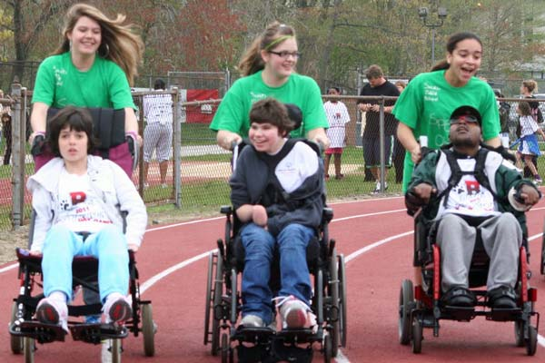

-

Special Olympics Indiana — Monroe County is proud to work with nearly 200 Special Olympics athletes and their families. Find out if you or a family member is eligible to participate
-

We offer year-round sports training and competition for children (8+) and adults with intellectual, cognitive or learning disabilities in seven different sports. View the SOIMC calendar
-

Special Olympics is an opportunity for athletes to develop physical fitness, demonstrate courage, experience joy and share gifts, skills and friendship with others in our community. Get involved